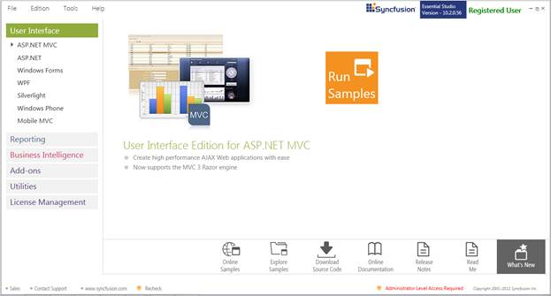
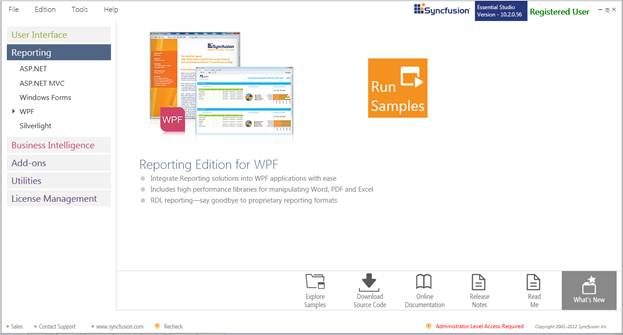
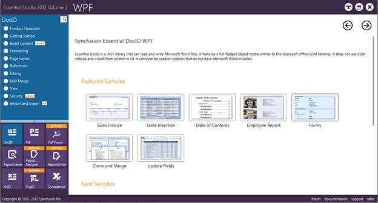
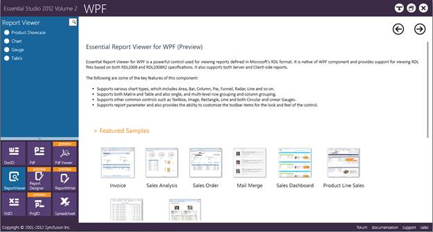

This section covers the location of the installed samples and describes the procedure to run the samples through the sample browser and online. It also lists the location of utilities, assemblies and source code.
Sample Installation Location
The Report Viewer WPF samples are installed locally on the disk, in the following location:
<InstalledLocation>\Syncfusion\EssentialStudio\<Version Number>\Reports\WPF\ReportViewer.WPF\Samples
Viewing Samples
To view the samples:
1. Click Start > All Programs > Syncfusion > Essential Studio <version number> > Dashboard. Syncfusion Essential Studio Dashboard window will open. User Interface panel is displayed by default.

Figure 3: Syncfusion Essential Studio Dashboard
2. Click Reporting from the left side panel.

Figure 4: Syncfusion Essential Reporting Dashboard
3. Click WPF.
 Note: You can view the samples in any of the
following three ways:
Note: You can view the samples in any of the
following three ways:
· Run Samples - View the locally installed Reporting Edition WPF samples using the sample browser
· Online Samples - View the online samples of WPF
· Explore Samples - Locate the samples on the disk

Figure 5: Windows Forms samples with Options Displayed
4. Click Run Samples link. The Syncfusion Essential Studio WPF Samples Browser is displayed.

Figure 6: WPF Reporting Edition Sample Browser
5. Click Report Viewer from the bottom-left pane to view the samples of Report Viewer.

Figure 7: Report Viewer Sample
6. Select any sample and browse through the features.